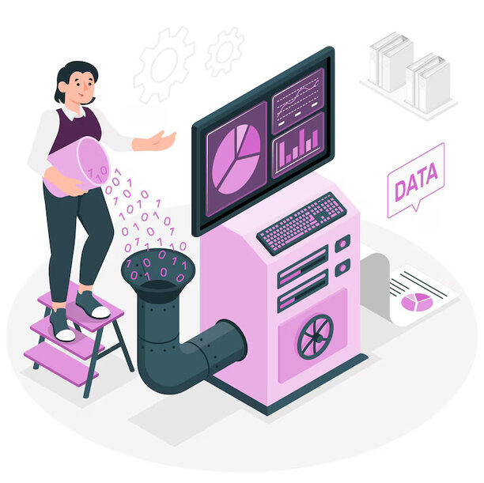
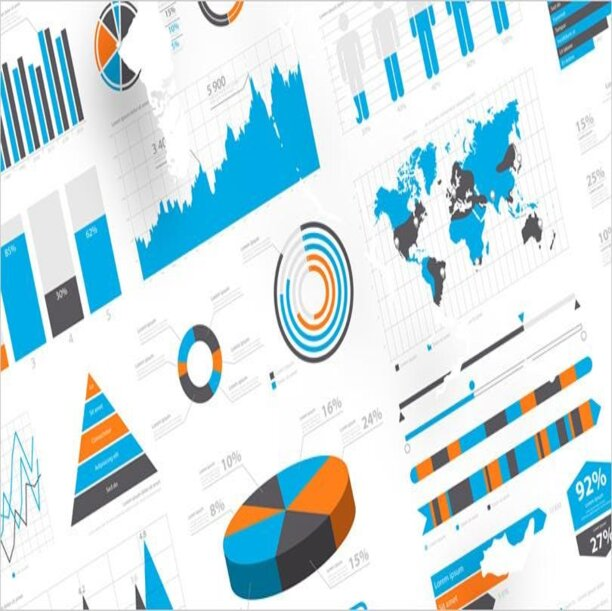

What I do?

To get useful information from data, it’s important to ensure the data is complete and high quality. I am skilled at collecting data from both CSV files and databases.

PROCESS
After gathering the data, the next step is a detailed analysis. I use tools like spreadsheet formulas for precise checks and SQL for more in-depth analysis.

VISUALIZE
To effectively share insights, visualizing data is essential. I use Tableau or Power BI to create attractive visuals, helping to uncover important information from the data.